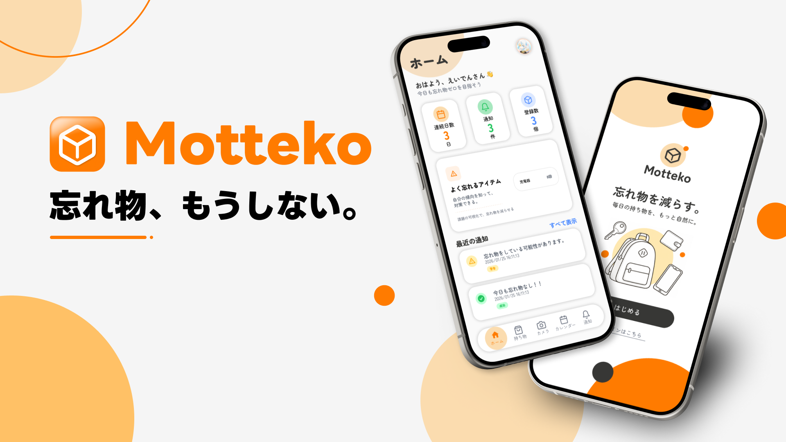
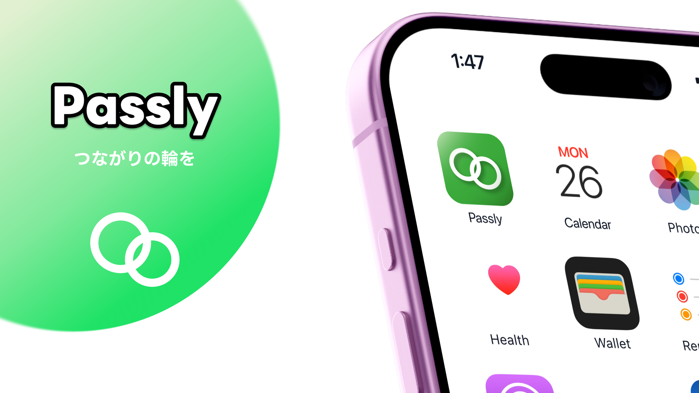

愛知工業大学 電気学科 電子情報工学専攻 B2。システム工学研究会に所属し、様々な技術を学んでいます。
最近は Figma と Flutter を中心に、UI/UXデザインをメインにしながらモバイルアプリ開発をしています。身近な困りごとを拾って、自分が欲しいアプリの形にするのが好きです。

忘れたくないモノを登録しておき、忘れ物をして玄関を出るとすぐに通知が来て取りに帰れる。チーム3人で初めて挑んだハッカソンで、デザイン・フロント・発表を担当しました。

すれ違うだけでエンジニア同士がつながれるアプリ。位置情報を使わず BLE で実現し、SysHack 2026 で最優秀賞を受賞。現在も継続開発中。
アイデアがUIの形になって、手元の端末で動き出す瞬間がいちばん好きです。「自分が欲しい」が出発点。
オートレイアウト、コンポーネント、プロトタイプ。整理されていく瞬間が気持ちいい。
1つのコードで iOS / Android の両方が動く体験に感動しました。
普段の「ちょっと困った」をメモするクセがあります。